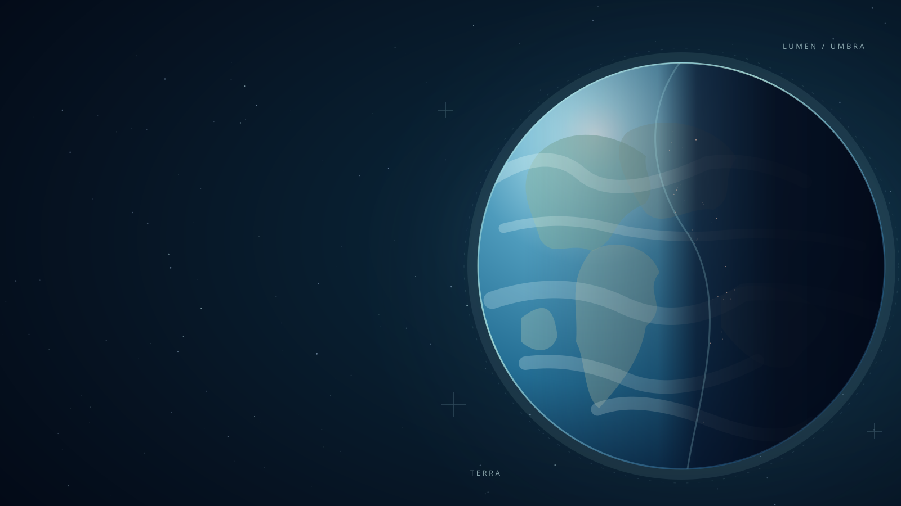

W tym samym momencie ktoś mówi „dzień dobry”, a ktoś inny „dobranoc”.
Przyzwyczajeni jesteśmy do obserwowania świata od środka. Wschód Słońca wydaje się wydarzeniem, które przychodzi do nas; zachód — wydarzeniem, które odchodzi.
Jednak Słońce nie obiega Ziemi raz na dobę. To obrót naszej planety kolejno zwraca różne miejsca ku Słońcu i odwraca je od jego światła. Jedno pełne obrócenie Ziemi względem odległych gwiazd trwa około 23 godzin i 56 minut; przeciętna doba słoneczna, według której organizujemy życie, trwa 24 godziny. Ta drobna różnica wynika z równoczesnego ruchu Ziemi wokół Słońca. [1, 2]
Widziana z oddali Ziemia jest nieustannie podzielona na stronę oświetloną i ciemną. Zmienia się to, które miejsca na powierzchni znajdują się po każdej ze stron.
Na powierzchni planeta ma wiele wschodów. Z oddali ma jedną granicę światła.
Granica między dniem a nocą ma własną nazwę. Terminator.
W astronomii terminatorem nazywamy granicę między oświetloną i nieoświetloną częścią ciała niebieskiego. Na uproszczonej kulistej Ziemi, oświetlanej z bardzo daleka, przebiega ona wzdłuż wielkiego koła. W rzeczywistości obserwowana granica zmierzchu nie jest ostrą kreską: atmosfera rozprasza światło i wydłuża zmierzch.
Oświetlenie w jednej chwili.
Zewnętrzny obserwator widzi jednocześnie stronę dzienną i nocną — jeśli kierunek obserwacji jest odpowiedni.
Zmierzch przez atmosferę.
Światło jest rozpraszane w powietrzu. Nawet gdy środek tarczy Słońca schowa się pod horyzont, nie od razu zapada całkowita ciemność.
Położenie granicy.
Obrót Ziemi i nachylenie jej osi sprawiają, że terminator przesuwa się względem powierzchni oraz zmienia sezonowy przebieg.
Nikt nie poleciał wtedy fotografować Ziemi. A jednak powstało jedno z najważniejszych zdjęć.
Frank Borman, Jim Lovell i William Anders znaleźli się na orbicie Księżyca. Podczas jednego z okrążeń za oknem statku zobaczyli Ziemię unoszącą się nad księżycowym horyzontem. Anders wykonał fotografię nazwaną później Earthrise. [3]
 AS08-14-2383 / NASA / APOLLO 8
AS08-14-2383 / NASA / APOLLO 8Ziemia weszła w kadr. I zmieniła opowieść.
Jedno zdjęcie pokazało całą naszą planetę jako niewielki, wspólny świat, widziany spoza niej. Na oryginalnej fotografii widać również granicę oświetlenia na Ziemi.
Ale jest tu drobna astronomiczna pułapka: z większości miejsc po widocznej stronie Księżyca Ziemia nie wschodzi codziennie tak jak Słońce u nas. Księżyc jest z Ziemią związany obrotem synchronicznym. Wrażenie „wschodu Ziemi” w tej sekwencji wynikało przede wszystkim z ruchu Apollo 8 po orbicie Księżyca. [3, 4]
Fotografia NASA / Bill Anders, Apollo 8, 24 grudnia 1968 r. Poznaj opis oryginalnego zdjęcia.Najważniejszy kąt naszych pór roku to tylko 23,4 stopnia.
Oś obrotu Ziemi jest nachylona o około 23,4° względem kierunku prostopadłego do płaszczyzny jej orbity. Kiedy półkula północna jest zwrócona ku Słońcu, promienie padają tam bardziej pionowo, a dni są dłuższe. Po pół roku sytuacja się odwraca. [1]
„Latem mamy ciepło, bo Ziemia jest wtedy bliżej Słońca”.
TO JEST PRAWDAZmiany pór roku wynikają głównie z nachylenia osi Ziemi, a nie z corocznych zmian odległości od Słońca. Gdy w Polsce jest lato, na południowej półkuli trwa zima.
Wartość przybliżona; powoli zmienia się w długich skalach czasu.
Maksymalna możliwa geometryczna wysokość Słońca na niebie to zenit.
To samo Słońce. Cztery miejsca i cztery pory roku.
Wybierz szerokość geograficzną i równonoc albo przesilenie. Obliczymy geometryczną wysokość Słońca w lokalne południe słoneczne oraz przybliżoną długość dnia. Nie potrzebujesz GPU ani żadnej animacji.
Używamy idealnych równonocy (deklinacja 0°) i przesileń (±23,44°), a nie dokładnych efemeryd dla konkretnego roku.
h = 90° − |φ − δ|, gdzie φ to szerokość geograficzna, a δ — deklinacja Słońca. Długość dnia wynika z zależności cos H = −tan φ · tan δ; w obszarach polarnych możliwy jest dzień lub noc trwające całą dobę. [5]Model celowo pomija załamanie światła w atmosferze, rozmiar kątowy tarczy Słońca, wysokość nad poziomem morza, lokalny horyzont, nieregularności orbity i dokładną datę równonocy. Wschody i zachody obserwowane w rzeczywistości mogą się od wyliczenia różnić. To doświadczenie z geometrią, nie lokalny kalendarz astronomiczny.
Potem nadeszło zdjęcie, na którym nie było żadnej granicy państw.
Załoga Apollo 17 wykonała słynną fotografię The Blue Marble. Na jednym kadrze znalazły się oceany, chmury, ogromna część Afryki i okolice bieguna południowego. To rzeczywista fotografia z misji, nie komputerowa mozaika satelitarna — choć późniejsze obrazy popularnie nazywane „Blue Marble” bywały składane z wielu pomiarów. [6, 7]
Żadna planeta nie jest tak dobrze znana z powierzchni, a jednocześnie tak zaskakująca, kiedy widzi się ją całą.
Fotografia „The Blue Marble” pozostaje jednym z najsłynniejszych obrazów Ziemi. Otwórz oryginał w archiwum NASA.
W planetarium Ziemia nie będzie już tylko kulą. Sprawdź, co ją ożywia.
Po lekturze możesz uruchomić istniejący symulator 3D. Użyj kamery Ziemi i spróbuj powtórzyć cztery obserwacje.
Odnajdź linię zmierzchu.
Obróć kamerę wokół Ziemi. Zobacz, która część planety jest oświetlona i z której strony padają promienie Słońca.
Przesuń datę o dobę.
Sprawdź, jak zmienia się wygląd planety. Rozróżnij obrót Ziemi od obiegu wokół Słońca.
Oddal się od Ziemi.
Wróć do całego Układu Słonecznego. Ile szczegółów atmosfery widać z odległości międzyplanetarnej?
Przejdź do globu.
Otwórz dodatkowe laboratorium geograficznego widoku Ziemi, by porównać oświetlenie powierzchni i dzień z nocą.
Ograniczenia symulatora: położenia planet wylicza przybliżony silnik orbitalny NASA/JPL, a obraz 3D jest wizualizacją z uproszczonym oświetleniem i grafiką powierzchni. Atmosfera, chmury, dokładne granice zmierzchu oraz bieżąca pogoda nie są odzwierciedlane jak na fotografiach satelitarnych. Etap 04 uruchamia silnik graficzny tylko na Twoje wyraźne żądanie.